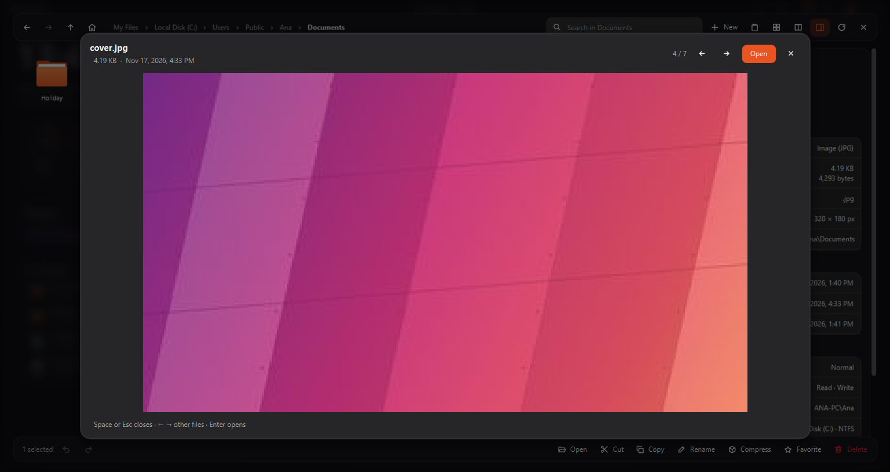

My Files: browsing
My Files is where all the work with files happens. It opens over the desktop with a blurred background, like an applications menu, and shows folders as large icons.
Places#
| Place | What you find there |
|---|---|
| Overview | Favourites, Most opened, Recent, Tags, Smart collections, Folders (Home, Desktop, Documents, Downloads, Pictures, Music, Videos, plus This PC, Timeline, Disk health, Vault and Trash), Drives, Network and Cloud. |
| Any folder | Its contents, with thumbnails for images. |
| This PC / Computer | The drives with a usage bar, label and free space. USB drives have their own icon. |
| Trash | Deleted items: restore, delete forever, empty. |
| Disk health | See Disk health. |
| Timeline | See Tags, timeline and automations. |
| Vault | See Vault. |
| Each tag | Every file with that tag. |
Toolbar#

From left to right: Back, Forward, Up, Overview, the clickable path (click any part to go there), the search box, New (folder or text document, download from the internet, connect to a server), Paste, View (sort, hidden files, thumbnails, details panel), Split view, Details, Refresh and Close.
Tip: type a path in the search box (for example
D:\Projectsor~/Music) and press Enter to go straight there.
Selecting#
| Action | How |
|---|---|
| Select one item | Click |
| Add or remove an item | Ctrl+click |
| Select a range | Shift+click |
| Select everything | Ctrl+A |
| Clear the selection | Click on an empty area, or Esc |
| Open | Double-click or Enter |
When something is selected, the action bar at the bottom shows Open, Cut, Copy, Rename, Compress, Favourite and Delete (and Restore in the Trash). The status bar on the left shows how many items are selected, the free space, and the Undo / Redo buttons.
Details and properties#
The details panel on the right shows a large preview, the type, size (also of folders, calculated in the background), dates, location and tags of the selected item.
Properties (Alt+Enter, or right-click › Properties) opens this panel, organised in sections:
- General — readable type (for example "PDF document"), exact size in bytes, contents of a folder, image dimensions, a text preview;
- Dates — created, modified, last accessed;
- Advanced — attributes, owner, POSIX permissions, the drive and its file system, and a Calculate SHA-256 button;
- for drives, General and Space — type (local or removable), label, file system, capacity, used and free.
Quick look#
Select a file and press Space to see it without opening another program.

| File | What you see |
|---|---|
| Images | The picture, fitted to the window |
| Text and code | The first 256 KB (also files without a known extension, when they contain text) |
| Audio and video | A player with Play/Pause (MP3, WAV, AAC/M4A, MP4/H.264) |
| ZIP, DOCX, XLSX, PPTX, EPUB | The list of files inside, without extracting |
| Folders | A summary of the contents |
Use ← → to go to the other files of the folder, Enter to open the file in its program, and Space or Esc to close.
Tabs#
| Action | Shortcut |
|---|---|
| New tab | Ctrl+T |
| Close tab | Ctrl+W |
| Next / previous tab | Ctrl+Tab / Ctrl+Shift+Tab |
| Open a folder in a new tab | Middle-click, or right-click › Open in new tab |
Each tab keeps its own place, Back/Forward history and search. The tab bar only appears when there are two or more tabs.
Split view#
Press F3 (or the split button in the toolbar) to see a second folder side by side.

- Drag and drop between the two panels, into a folder, or from other programs into My Files.
- Shift+F5 copies and Shift+F6 moves the selection to the other panel.
- Copies go through the transfers panel and can be undone; tags follow the files.
Keeping the folder up to date#
FileExp watches the open folder and refreshes it by itself when something changes (you can turn this off in Settings › Files). F5 refreshes by hand.